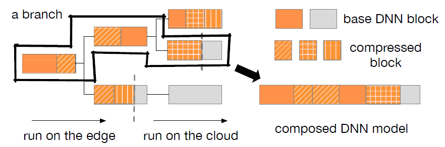

Selected Research Projects
Intelligent Edge

Context-Aware Compilation of DNN Training Pipelines across Edge and Cloud
Published in Proc. ACM Interact. Mob. Wearable Ubiquitous Technol. 5, 4, Article 188 (December 2021) Codeintelligent, raising conflicts with the limited resource. On-device model personalization is particularly hard as training models on edge devices is highly resource-intensive. In this work, we propose a novel training pipeline across the edge and the cloud, by taking advantage of the powerful cloud while keeping data local at the edge. Highlights of the design incorporate the parallel execution enabled by our feature replay, reduced communication cost by our error-feedback feature compression, as well as the context-aware deployment decision engine. Working as an integrated system, the proposed pipeline training framework not only significantly speeds up training, but also incurs little accuracy loss or additional memory/energy overhead. We test our system in a variety of settings including WiFi, 5G, household IoT, and on different training tasks such as image/text classification, image generation, to demonstrate its advantage over the state-of-the-art. Experimental results show that our system not only adapts well to, but also draws on the varying contexts, delivering a practical and efficient solution to edge-cloud model training.

Federated Model Search via Reinforcement Learning
Published in 41st IEEE International Conference on Distributed Computing Systems SlidesFederated Learning (FL) framework enables training over distributed datasets while keeping the data local. However, it is difficult to customize a model fitting for all unknown local data. A pre-determined model is most likely to lead to slow convergence or low accuracy, especially when the distributed data is non-i.i.d.. To resolve the issue, we propose a model searching method in the federated learning scenario, and the method automatically searches a model structure fitting for the unseen local data.We novelly design a reinforcement learningbased framework that samples and distributes sub-models to the participants and updates its model selection policy by maximizing the reward. In practice, the model search algorithm takes a long time to converge, and hence we adaptively assign sub-models to participants according to the transmission condition. We further propose delay-compensated synchronization to mitigate loss over late updates to facilitate convergence. Extensive experiments show that our federated model search algorithm produces highly accurate models efficiently, particularly on non-i.i.d. data.

Context-Aware Deep Model Compression for Edge Cloud Computing
Published in 40th IEEE International Conference on Distributed Computing SystemsWhile deep neural networks (DNNs) have led to a paradigm shift, its exorbitant computational requirement has always been a roadblock in its deployment to the edge, such as wearable devices and smartphones. Hence a hybrid edge-cloud computational framework is proposed to transfer part of the computation to the cloud, by naively partitioning the DNN operations under the constant network condition assumption. However, realworld network state varies greatly depending on the context, and DNN partitioning only has limited strategy space. In this paper, we explore the structural flexibility of DNN to fit the edge model to varying network contexts and different deployment platforms. Specifically, we designed a reinforcement learning-based decision engine to search for model transformation strategies in response to a combined objective of model accuracy and computation latency. The engine generates a context-aware model tree so that the DNN can decide the model branch to switch to at runtime. By the emulation and field experimental results, our approach enjoys a 30%50% latency reduction while retaining the model accuracy.
Distributed Learning
Distributed Deep Learning Benchmarking
With widespread advances in machine learning, the scability of deep learning models is increasing and the development of distributed deep learning, it is a common perform distributed training to speed up the trainng process. To help better instruct the desgin of distributed data parallel (DDP) training system, in this project, we evaluated different DDP algorithms (All Reduce, Parameter Server) using various neural networks (CNN, transformers) with different frameworks (torch, Ray, Hoplite) under different environments. Besides, we also tested over other possible factors including settings of hyperparameters, sharing usage of CPU, communication backend. We constructed different GPU and CPU configurations over AWS and slurm cluster to evaluate the performance including latency, vairability and accuracy to instruct possible improvements when desgining new DDP system. we have several suggestions: 1 We should try to shorten the iterations and use as few iterations as possible to let the training converge. Because training for too many iterations can possibly lead to the spiking of latency. 2 We should use good schedule algorithms to assign the tasks on the distributed servers. Let as many resources as possible of the same tasks be placed on the same machine or close to each other. And place different tasks separately. 3 We should have a good fencing design of the data center to minimize the effects of CPU usage. 4 We should design an appropriate checkpointing period, to tradeoff between checkpointing overhead and possible loss caused by the fault happened during training.
Computer Information Systems